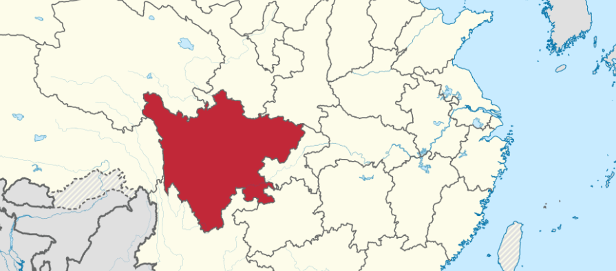
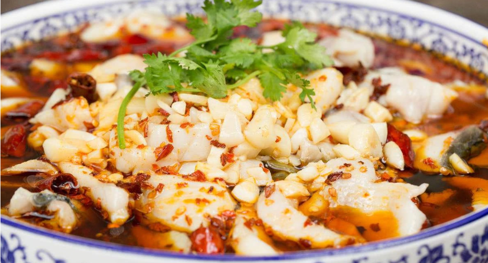

About
Chuan is the abbreviation for Sichuan, a province in the southwestern part of China. which is on the southeast coast of China. Located in a basin, the weather is very humid and people eat spicy food to sweat and defend the cold.

Specialties and Features
Yue cuisine has gathered the advantages of several types of domestic and foreign cuisines, using a very large variety of ingredients and chooses rare ingredients. Since Guangdong enjoys a nice subtropical climate and is by the sea, the region enjoys extraordinarily rich products, thus people tend to favor fresh, raw and fierce dishes. The flavor of Yue cuisine has also different branches, which can be either fresh, smooth, tender or strong, oily and heavy.